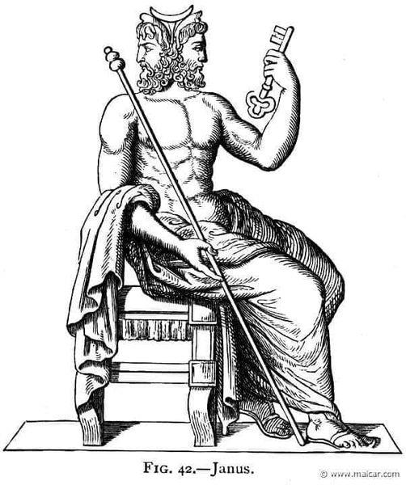

Contents

Who Was Janus?
We see this two-faced image a lot in our lives. Many know it dates back to Greek and Roman mythology. However, there’s much more to this character than meets the eye.
Janus means “archway” in Latin. Janus was the Roman god of gateways and beginnings, often depicted as having two faces looking in opposite directions. The month of January is named for him.
As a god of motion, he looks after passages, causes the starting of actions, and presides on all beginnings and since movement and change are bivalent, he has a double nature, symbolized in his two-headed image.
His two faces (originally, one was always bearded, one clean-shaven; later both bearded) originally represented the sun and the moon. He was usually depicted with a key. Janus's head is a popular phrase for deception, that is, when action does not match speech.
In the definition of Janus, there are two very different versions of whom this mythological character was:
The irony is that most of our rulers today are two-faced! Whether consciously or subconsciously we all know lying and deception are inherent to the matrix that’s been foisted upon us.
A quick perusal of governmental, corporate, legal, financial, and social leadership and behaviour around the world is all the confirmation you need.
Keys, Janus, and the Pope:
Note Janus was depicted with a key. Turns out there’s a lot to this. Remember he’s the god of doors. Turns out there’s another god, a goddess, who also bore a key. Remember, Catholicism teaches ancient paganism with Christian names and terms. This is another perfect illustration of that.
Follow me:
About 378, the Pope fell heir to the keys that were the symbols of two well-known Pagan divinities at Rome. Janus bore a key, and Cybele bore a key; and these are the two keys that the Pope emblazons on his arms as the ensigns of his spiritual authority.
By 378 A.D., this church was already talking about the bishop of Rome holding the power of the keys, making him Pontiff.
What was this power of the keys? It was these two gods (Janus and Cybele) that had the power of heaven and earth.
Cybele…with fish god mitre the pope wears, and key in hand…goddess worship anyone?
That’s a lotta power, heaven and earth. As you can see, all these ties in with the Isis-Samiramis et al lineage of goddess worship that goes down through millenia and in which today’s Illuminati still revel. The governments all over the world are fully based on Freemasonic paganism to the core. All for occult power as they honour the forces they worship and tap into.
But this Vatican connection and switchover from these pagan key gods to supposed “keys of the kingdom” that somehow links to Peter whom they claim to be the first Vicar of Christ of which the Pope is spiritually descended is typical historical revisionism.
The pagan Roman priesthood (before the birth of Yahushua Messiah) had a sovereign pontiff who held the keys. The goddess Cybele was also worshipped as Cardea, and the College of Cardinals was named for her.
She bore a key like Janus, which opened the gates of the invisible world.
In Greek mythology Cybele holds the key to Earth, shutting her up in winter and opening her again in the spring. Similarly, Janus opens the door of the sky and releases the dawn.
The term Cardinal is derived from Cardo, a hinge. Janus, whose key the Pope bears, was the god of doors and hinges…
It was only in the second century before the Christian era that the worship of Cybele under that name, was introduced to Rome; but the same goddess, under the name of Cardea, with the “power of the key,” was worshipped in Rome, along with Janus, ages before.
Now the “Flip Side” of Janus:
Janus was no small potato. As you research more and more into him, he connects a lot of dots and represents serious forces.
He presides over the concrete and abstract beginnings of the world, such as religion and the gods themselves, he too holds access to Heaven and other gods: this is the reason why men must invoke him first, regardless of the god they want to pray or placate.
He is the initiator of human life, new historical ages, and economic enterprises: in the myth he first minted coins, and the first coin of the liberal series, bears his effigy on one face.
Who WAS this guy?
He’s apparently a gateway, for economic power and societal change. But is this a real entity? Someone they invoke? And/or a blueprint for chaos?
Texe Marrs calls it the Illuminate’s secret formula for world revolution and deceit. This is how and why Satan is making such incredible progress. The Janus Factor is Satan’s hidden method. The two-faced Roman god Janus was known as the “Keeper of the Keys” and as the “Interpreter of the Mysteries.” Throughout history, Janus operatives have successfully employed the Janus method to churn global events and overturn all standards of morality and human dignity psychically and culturally.
In other words, by playing with right v. wrong and reversing social norms to bring society into chaos, or utilizing the use of opposites with the Hegelian dialectic where a planned action provokes a similarly planned re-action and other techniques, you can do a lot of manipulative damage.
Freemasonry:
Freemasonry is all about opposites and duality and playing one side against another as some sort of occult ritualistic exercise, supposedly to evoke the illuminated man and world. It’s basically what the motto on their two-headed crest says, create chaos to bring about the new world order essentially.
Most involved in lower-level Freemasonry don’t know what the heck they’re involved in, like lower level anything. But the commitment to their agenda gets extremely serious at higher levels and human life takes a back seat to the “illuminated” program of using these techniques and powers for very evil ends.
Freemasonic symbolism is rife with duality. Sun-moon, black-white, twin pillars, male-female etc.
The Illuminati is all about levels of disguise via carefully constructed lies, half-truths, and diversions. Just as their doctrines of opposites seem to have this new-age air of esoteric truth, these entities they literally worship in some form or another always have a cover.
What they are leaving out in the name Janus in all the popularized pictures and references to this guy is that Janus was known as Janus-Bifrons, and when you research THAT name, it takes us to a whole different place.
In demonology, Bifrons was a demon, Earl of Hell, with six legions of demons (twenty-six for other authors) under his command. He teaches sciences and arts, the virtues of the gems and woods, and herbs, and changes corpses from their original grave into other places, sometimes putting magic lights on the graves that seem like candles. He appears as a monster, but then changes his shape into that of a man.
The origin of the name is, without any doubt, the Roman god Bifrons (Janus).
Other spellings: Bifrovs, Bifröus.
Bifrons was also one of the names given to the Baphomet allegedly worshipped by the Knights Templar, and which description was as a statue with two heads surely inspired by the Roman god Bifrons, one looking towards the left to tell the past, and the other looking towards the right to tell the future, all this through the power of a demon (there were other suppositions on the figure of the Baphomet).
It is also said the Janus-Bifrons appeared as a monster and then changed his appearance to that of a man. In other words, he was (is) a shapeshifter.
And Baphomet?
The Knights Templar were the precursors to today’s Freemasons. Now we see how this all ties in together. Looks like this could be the same nasty dude in a few different disguises. Typical.
Now Baphomet takes us straight to witchcraft and the horned goat. Which also ties in with Freemasonry. Any way you connect it, we’re down in the bowels of the occult now. And as we know, the Illuminati are drenched in witchcraft however you slice it or want to call it.
Speaking of keys, when it comes to evoking spirits as the Satanic Illuminati do, there’s a lot of black magic involved that has very specific procedures. And many of these wicked controllers are adept in this to increase their power and obtain favours.
So when you celebrate the New Year of January (Janus), it’s nothing innocent, believe me!
The world's "New Year" is NOT the beginning of the Scriptural New Year!
Shemoth/Exodus 122“This new moon is the beginning of new moons for you, it is the first new moon of the year for you.
13:4 “Today you are going out, in the new moon Aviv.
See what Wikipedia has to say about the world's "new year" . . .
The Romans dedicated New Year's Day to Janus, the god of gates, doors, and beginnings for whom the first month of the year (January) is also named. After Julius Caesar reformed the calendar in 46 BC and was subsequently murdered, the Roman Senate voted to deify him on the 1st January 42 BC in honor of his life and his institution of the new rationalized calendar. The month originally owes its name to the deity (god) Janus, who had two faces, one looking forward and the other looking backward. This suggests that New Year's celebrations are founded on pagan traditions.
The master deceiver (Satan) twists Scripture, using scribes/translators religion, tradition, and the doctrines of [false] men to accomplish this.
Yirmeyahu/Jeremiah 88“How do you say, ‘We are wise, and the Torah of יהוה is with us’? But look, the false pen of the scribe has worked falsehood.
Yirmeyahu/Jeremiah 1021For the shepherds have become brutish, and they have not sought יהוה. Therefore they did not understand, and all their flock scattered.”
Yirmeyahu /Jeremiah 231“Woe to the shepherds destroying and scattering the sheep of My pasture!” declares יהוה.
2Therefore thus said יהוה Elohim of Yisra’ěl against the shepherds who feed My people, “You have scattered My flock, driven them away, and have not tended them. See, I am punishing you for the evil of your deeds,” declares יהוה.
11“For both prophet and priest have become defiled. Even in My house I have found their evil,” declares יהוה.
14a “And among the prophets of Yerushalayim I have seen a horrible matter: committing adultery and walking in falsehood.
Malaki/Malachai 21“And now, O priests, this command is for you.
2“If you do not hear, and if you do not take it to heart, to give esteem to My Name,” said יהוה of hosts, “I shall send a curse upon you, and I shall curse your blessings. And indeed, I have cursed them, because you do not take it to heart.
Yehezkel/Eze 342“Son of man, prophesy against the shepherds of Yisra’ěl, prophesy and say to them, ‘Thus said the Master יהוה to the shepherds, “Woe to the shepherdsa of Yisra’ěl who have been feeding themselves! Should not the shepherds feed the flock?
* He removed the two most Revered and Set-Apart Names of Father and Son from Scripture and replaced them with pagan titles and names, used for all "gods" and "exalted man" (lords).
*Satan changed the [appointed times] and [law] of The Almighty (Dan 7:25) to his counterfeit holidays and laws (like Christmas, Easter, Valentine, Halloween, Thanksgiving, [New year] etc.
*He changed the Shabbat of The Almighty from the seventh day (sat-day) of the week to the first day (sun-day) of the week.
*He used man through religion and traditions to teach heresies and dogmas that are not recorded in Scripture, teaching them to disobey the laws of The Almighty and to promote lawlessness.
The prince of darkness (Satan) has successfully used religion, traditions, culture, and the doctrines of man to deceive billions of believers, keeping them bound to his kingdom of darkness. The sad thing is that these masses of believers do not have the discernment, knowledge, or revelation to recognize the deception.
Those who STUDY Scripture and SERVE Almighty יהוה in Spirit and Truth are NOT DECEIVED by the enemy's twisting of Scripture, and the changing of יהוה’s APPOINTED TIMES.
The Scriptural new year (NOT only for the Jews, but for all who observe the Commands and Instructions (Torah) of יהוה, including Gentiles) starts in March/April.
Think for a moment how the kingdom of darkness has benefited from "New Year's celebrations". It is a well-known fact that most people OVERINDULGE during these celebrations. They abuse alcohol and other substances, leading to road rage, road deaths, immorality, adultery, unwanted pregnancies, abortion, and many more, breaking all the Instructions and Commands (Torah) of Almighty יהוה!
Those who serve Almighty Father יהוה, following His Instructions and obeying His Commands (Torah) will have nothing to do with "pagan New year’s celebrations".
From the Book of Dani'el (teaching about the End Times), we read the following very important verses.
These verses apply to all of us today, just as it applied to the Yisra’elites back then:
Dani’el 98 "O Master, to us is the shame of face, to our sovereigns, to our heads, and to our fathers, because we have sinned against You".
10 "And we have not obeyed the voice of יהוה our Elohim (Almighty), to walk in His Torot (plural of Torah/laws), which He set before us through His servants the prophets".
13 "As it is written in the Torah of Mosheh, all this evil has come upon us, and we have not entreated the face of יהוה our Elohim (Almighty), to TURN BACK (repent) from our crookedness’s, and to study Your truth".
Will believers continue to observe pagan traditions, or will they REPENT and ALIGN themselves to the INSTRUCTIONS and COMMANDS of Almighty יהוה?
Ma’asei/Acts 319“Repent therefore and turn back, for the blotting out of your sins, in order that times of refreshing might come from the presence of the Master,
20 and that He sends יהושע Messiah, pre-appointed for you,
21 whom heaven needs to receive until the times of restoration of all matters, of which Elohim spoke through the mouth of all His set-apart prophets since of old.